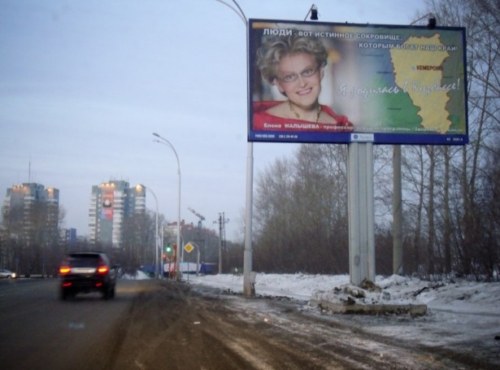

Истинное сокровище Кузбасса Елена Малышева, вот уже 13 лет, ведёт реинкарнированную коммерчески успешную программу «Здоровье» на Первом канале.

28 января в эфире программы «Будь здоров» Елена рассказывала на всю страну про прелести обрезания. Причём не просто рассказывала, а в духе лучших выпусков программы «Галилео» показала всё наглядно.
Настоящий член в эфир главного канала страны пронести было видимо тяжело, поэтому в роли членоимитатора выступила одна из зрительниц в зале. То что «зрительница» скорее всего подсадная, степени абсурда и сюрреализма абсолютно не уменьшает.
Обрезание крайней плоти у мальчиков и мужчин делается по нескольким причинам.
Наиболее распространенная видимо — религия. Процесс обрезания в этом случае выполняет роль жертвоприношения богам. Такая замена овцы на кусочек собственной плоти.
Вторая — гигиена. Хотя однозначно до сих пор не установлено, но есть мнение, что под крайне плотью легко скапливаются и размножаются болезнетворные бактерии, которые, в свою очередь способствуют появлению и развитию целого ряда заболеваний.
Третья распространённая причина — традиция. К примеру евреи таким образом показывают свою принадлежность к еврейскому народу. В этой связи во времена преследования евреев нацистами для сохранения собственной жизни применялись даже технологии восстановления крайней плоти.
Бывает еще обрезание по медицинским показаниям — исправление анатомических недостатков. В примеру, в случае фимоза, у мальчиков не раскрывается или раскрывается не полностью крайняя плоть.
Есть также мнение, что обрезание способствует продлению полового акта, а обрезанным мальчикам сложнее мастурбировать.